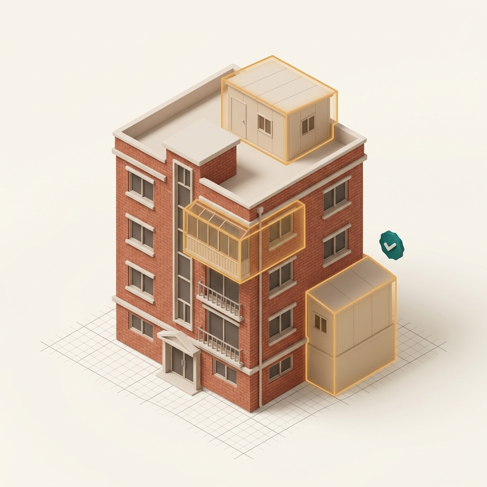

이행강제금 걱정,
이번 특별법으로
정리하세요.
「특정건축물 정리에 관한 특별조치법」(법률 제21820호)이 2026년 12월 17일부터 18개월간 시행됩니다. 옥탑방·발코니 확장·방 쪼개기·무단 용도변경까지 법제처 법령 기준 자가진단으로 대상 여부를 확인하세요.

건축사 설계도서·현장조사서 준비에 2~3개월, 지금 시작해야 여유롭습니다
법 제4조에 따라 건축사가 작성한 설계도서와 현장조사서를 첨부해 신고해야 하며, 유효기간 내 접수분은 만료 후에도 법 적용을 받습니다(부칙 제3조).
신고 접수 시작까지
우리 건물, 규모 기준에 맞을까요?
증축·대수선한 부분으로서 사용승인을 받지 못한 면적까지 모두 포함해 판단합니다.
단독주택 제3조제1항제2호가목
165㎡이하 (연면적)
165㎡ 초과 ~ 330㎡ 이하는 지자체 조례로 정하는 바에 따라 적용 가능 (부칙 제4조)
마당 창고를 방으로 쓰거나 옥상에 방을 올린 경우
다가구주택 제3조제1항제2호나목
660㎡이하 (연면적)
단독주택 중 다가구주택에 한정하여 연면적 660㎡ 이하까지 적용
원룸 방 쪼개기, 필로티·옥탑 무단 증축
다세대주택 제3조제1항제1호
85㎡이하 (세대당 전용)
세대별로 구분 등기된 다세대주택(무단 증축·대수선 면적 포함 85㎡ 이하)
발코니 확장·샌드위치패널 증축 세대
이런 위반, 대부분 해당됩니다
현장에서 가장 많이 만나는 사례입니다. 여러 개가 겹쳐 있어도 한 번에 정리합니다.
- 옥탑방·옥상 증축 (제2조제1항제1호가목) — 계단실·물탱크실을 주거 공간으로 증축한 경우
- 발코니·베란다 무단 확장 (제2조제1항제1호가목) — 샌드위치패널·새시로 면적이 늘어난 경우
- 방 쪼개기·가구 분할 (제6조제1항제3호) — 세대·가구·호수를 증가시키는 대수선 (피난·방화·소방·주차 기준 확인 필수)
- 필로티·주차장 증축 (제2조제1항제1호가목) — 1층 공간을 방·창고로 무단 증축한 경우
- 무단 용도변경·근생 주택 사용 (제2조제1항제1호다목·제3조제1항제3호) — 근린생활시설을 2023.12.31 이전부터 주택으로 사용해 온 경우
법제처 법령 기준 양성화 대상 자가진단
국가법령정보센터 Open API의 「특정건축물 정리에 관한 특별조치법」(법률 제21820호) 조문 기준 7단계 정밀 진단입니다.
1. 위반 건축(증축·대수선·용도변경) 부분이 2023년 12월 31일 당시 사실상 완공되었나요?공사가 완료되어 실제로 사용하던 시점 기준입니다 (근생→주택 사용도 2023.12.31 이전부터 주택으로 사용한 경우에 한정).
2. 어떤 위반 유형에 해당하나요?위반 유형에 따라 부설주차장 면제 특례(제7조) 및 소방·피난·방화 강화 기준(제6조제1항제3호) 적용 여부가 달라집니다.
3. 건축물 전체 연면적(위반 증축 포함)의 100분의 50(50%) 이상이 주거용인가요?복합용도 건축물이라도 전체 연면적의 50% 이상이 주거용이면 ‘주거용 특정건축물’에 해당합니다.
4. 무단 증축·대수선 면적을 포함한 건축물 전체 규모가 어디에 해당하나요?사용승인을 받지 못한 증축·대수선 부분을 합산한 면적 기준입니다.
5. 도시·군계획시설 부지, 개발제한구역, 군사보호구역, 접도구역, 도시개발·정비구역, 보전산지, 상습재해구역에 위치하나요?단, 개발제한·군사구역 지정 전 건축물이나 도시개발·정비사업에 지장이 없는 건축물, 국방부장관 적용 결정 건축물은 예외입니다.
6. 과거 특별조치법으로 사용승인서를 받은 이력이 있나요?과거 양성화 후 소유권 변동이 없는 건축물은 제외되지만, 이후 매매·상속 등으로 소유권이 변경된 건축물은 다시 신청할 수 있습니다.
7. 대지 권원(본인소유·사용승낙·집합건물 결의), 도로 접합(최소 너비 3m 이상), 구조·방화·일조권, 과태료·이행강제금 납부 요건을 충족하나요?소방에 지장이 없다고 인정되면 3m 도로·건축선 규정이 완화되며, 과태료·이행강제금은 1년 이내 완납 조건부 승인이 가능합니다.
법령 요건 진단 0 / 7
7가지 법령 요건을 선택하면 조문별 판정이 표시됩니다
법제처 국가법령정보센터 Open API의 「특정건축물 정리에 관한 특별조치법」(법률 제21820호) 제2조·제3조·제6조·제7조·제9조 기준으로 자동 분석합니다.
※ 본 자가진단은 법제처 국가법령정보센터 Open API의 「특정건축물 정리에 관한 특별조치법」(법률 제21820호, 2026.12.17 시행)에 근거한 사전 진단이며, 최종 사용승인 여부는 건축물대장·현장조사서 및 관할 지자체 건축위원회 심의에 따라 결정됩니다.
신고부터 대장 정리까지 6단계
건축사가 처음부터 끝까지 직접 진행합니다. 신고 접수 후 30일 내 건축위원회 심의를 거쳐 사용승인서가 교부됩니다(제6조제1항).
비용은 두 가지로 나뉩니다
법으로 정해진 비용과 사무소 보수를 분리해 설명드립니다. 숨은 비용은 없습니다.
법정 비용 지자체 납부 (법 제9조)
- 과태료 (제9조제1항) — 「건축법」 제80조에 따라 산정한 이행강제금의 5회분 상당액
- 기납부 차감 (제9조제2항) — 5회 미만 부과 시 5회분에서 이미 납부한 이행강제금 차감 (단, 추가 위반 시 미차감)
- 전세사기피해주택 특례 (제9조제1항 단서·제7조제2항) — 전세사기피해자가 매수한 피해주택은 과태료 및 추가 주차장 설치 의무 면제
- 1년 내 조건부 승인 (제6조제1항제4호 단서) — 과태료·이행강제금을 1년 이내 모두 납부하는 조건으로 사용승인 가능
사무소 보수 설계·대행 (법 제4조)
- 현장 조사·실측 및 법 제4조제1항에 따른 건축사 설계도서·현장조사서 작성
- 구조안전·방화·피난·일조권 및 소방시설 기준 검토
- 관할 지자체 신고 접수 및 건축위원회 심의(제6조) 대응
- 사용승인서 교부 후 건축물대장 위반 표기 말소 확인
「특정건축물 정리에 관한 특별조치법」(법률 제21820호) 조문별 핵심 요약 보기
1. 정의 및 적용 대상 (제2조·제3조제1항)
2023년 12월 31일 당시 사실상 완공된 주거용 특정건축물(건축허가·신고 없이 건축·대수선한 건축물, 사용승인을 받지 못한 건축물, 무단 용도변경 건축물 중 연면적의 50% 이상이 주거용인 건축물). 2023년 12월 31일 이전부터 사실상 주택으로 사용한 근린생활시설 포함.
2. 대상 규모 기준 (제3조제1항제1호~제3호·부칙 제4조)
사용승인을 받지 못한 증축·대수선 면적을 포함하여 ① 다세대주택: 세대당 전용면적 85㎡ 이하, ② 단독주택: 연면적 165㎡ 이하(해당 지자체 조례로 정하는 경우 165㎡ 초과 330㎡ 이하까지 적용 가능), ③ 다가구주택: 연면적 660㎡ 이하.
3. 적용 제외 구역 및 종전 양성화 건축물 제한 (제3조제2항·제3항)
도시·군계획시설 부지, 개발제한구역(지정 전 건축·대수선 제외), 군사기지·군사시설 보호구역(지정 전 건축 또는 국방부장관 적용 결정 제외), 접도구역, 도시개발구역(사업 지장 없는 경우 제외), 정비구역(사업 지장 없는 경우 제외), 보전산지, 상습재해·환경정비구역은 제외됩니다. 또한 종전 특별조치법에 따라 사용승인서를 받은 후 소유권 변동이 없는 건축물은 적용되지 않습니다.
4. 신고 및 사용승인 심의 기준 (제4조·제6조)
건축사가 작성한 설계도서와 현장조사서를 첨부해 신고하면 30일 내에 건축위원회 심의를 거쳐 사용승인서를 교부합니다. 자기 소유 대지(사용승낙 대지·집합건물법 제15조제1항 결의 증명 포함), 너비 3m 이상 도로 접합(소방 지장 없을 시 완화 가능), 구조안전·위생·방화·일조권 지장 없음이 필요하며, 세대·가구·호수 증가 대수선(방 쪼개기) 및 근생→주택 사용 건축물은 건축법 제49·50·52조 및 소방시설법 제12조를 준수해야 합니다.
5. 부설주차장 특례 및 과태료·유효기간 (제7조·제9조·부칙 제1~3조)
원칙적으로 추가 부설주차장 설치 의무가 면제되나, 세대·가구·호수 증가 대수선 및 근생→주택 건축물은 부설주차장 설치 또는 비용 납부가 필요합니다(전세사기피해주택 매수자 면제, 조례 완화 가능). 과태료는 이행강제금 5회분 상당액에서 기납부 이행강제금을 차감하여 부과하며(추가 위반 시 5회분, 전세사기피해주택 매수자 면제), 유효기간(2026.12.17 ~ 2028.06.16) 만료 전 신고 접수분은 만료 후에도 이 법을 적용합니다.
※ 법제처 국가법령정보센터 원문: 국가법령정보센터 바로가기
위반건축물 이행강제금 산정 계산기
대한민국 「건축법」 제80조 및 동법 시행령 제115조의2([별표 15]) · 지자체 건축조례 기준에 따라 관할 지자체·위반유형·구조·면적·행위시기·감경요건별 1회 부과 예정액과 연간 누적 예상 금액을 실시간으로 산출합니다.
본 계산기 결과는 이해를 돕기 위한 이행강제금 예상 산정 금액이며, 실제 부과되는 정확한 금액은 아닙니다.
건물 주소 검색 및 지자체 조례 자동 연동
위반 유형 선택 (건축법 제80조제1항 · 시행령 [별표 15] · 지자체 조례 부과율)
구조 · 시가표준액 및 위반 면적(㎡) 입력
선택 구조: 샤시/철파이프조(구조지수 0.16) — 조립식패널조(0.38)·RC조(1.00)와 시가표준액 단가가 다르게 산정됩니다.
행위시기 · 건축물 용도 및 감경 요건 (주거용·85㎡ 이하·조례 감경)
단계별 산출 근거 상세 내역
| ① 관할 지자체 · 조례 기준 | 주소 조회 대기 |
|---|---|
| ② 기준 시가표준액 (㎡당) | 주소 조회 시 공시지가 연동 |
| ③ 위반 면적 · 행위시기 | — |
| ④ 기본 산정가액 1㎡당 시가표준액 × 50% × 위반면적 | — |
| ⑤ 위반 유형별 부과율 | 무허가/미신고 증축 · 100% (시가의 50%) |
| ⑥ 적용된 감경률 | 소규모 주거 50% + 조례 50% (×0.25) |
| ⑦ 1회 부과 예정 금액 10원 미만 절사 (원단위 절사) | — 원 |
산출 공식 및 관련 법령 조항 보기
건물 주소 조회 및 면적을 입력하시면 법정 산출 공식이 표시됩니다.
- 「건축법」 제80조제1항·시행령 제115조의2([별표 15]): (1㎡당 시가표준액 × 50% × 위반유형별 부과비율) × 위반면적 [무단증축 100%, 용적률 90%, 건폐율 80%, 높이제한 70%, 부설주차장 용도변경·가설창고 100%, 비가림·방쪼개기 50%, 일반 무단용도변경 10%, 공작물 3%]
- 소규모 주거 감경 및 조례 감경: 주거용 60㎡(구법 85㎡) 이하 1/2 감경(법 제80조제1항 단서) 및 지자체 조례 감경(서울시 제45조·구리시 제37조 등) 반영
- 반복 부과 (법 제80조제5항): 시정명령 불이행 시 최초 부과일 기준 1년에 2회 이내의 범위에서 조례로 정하는 횟수만큼 시정될 때까지 반복 부과됩니다.
자주 묻는 질문
법 제9조제2항에 따라 5회 미만의 이행강제금 부과 사실이 있는 경우, 이행강제금 5회분 상당액에서 이미 납부한 이행강제금을 차감한 금액만 과태료로 부과됩니다. 또한 전세사기피해자가 매수한 전세사기피해주택은 과태료가 면제됩니다(제9조제1항 단서).
특별법 제3조제1항은 2023년 12월 31일 당시 사실상 완공된 주거용 특정건축물이 대상입니다. 이후 증축분은 원상복구 또는 일반 건축법 절차(추인 등)를 검토해야 합니다. 항공사진·공과금 기록 등으로 완공 시점을 입증하는 방법도 함께 안내해 드립니다.
일반 증축은 부설주차장 추가 설치 의무가 면제되지만(제7조제1항 본문), 세대·가구·호수를 증가시키는 대수선(방 쪼개기)이나 근린생활시설을 주택으로 사용한 건축물(제3조제1항제3호)은 피난·방화·소방 기준 준수(제6조제1항제3호) 및 부설주차장 설치 또는 비용 납부가 필요합니다(제7조제1항 단서). 다만 전세사기피해주택 매수자이거나 지자체 조례로 완화·면제하는 경우 특례를 받을 수 있습니다(제7조제2항·제3항).
법 제3조제3항에 따라 과거 특별조치법으로 사용승인서를 받은 후 소유권 변동이 없는 건축물은 제외됩니다. 하지만 사용승인서 취득 이후 매매·상속·증여 등으로 소유권이 변경된 건축물은 이번 특별법 적용 대상에 포함될 수 있습니다.
규모 초과나 비주거용이라도 일반 추인(사용승인), 부분 철거 후 정리, 용도변경 등 다른 방법이 있을 수 있습니다. 상황을 알려주시면 가능한 선택지를 정리해 드립니다.
18개월은 생각보다 짧습니다.
주소 하나로 지금 확인해 보세요.
양성화 가능 여부, 예상 과태료, 준비 일정까지 건축사가 직접 정리해 드립니다.